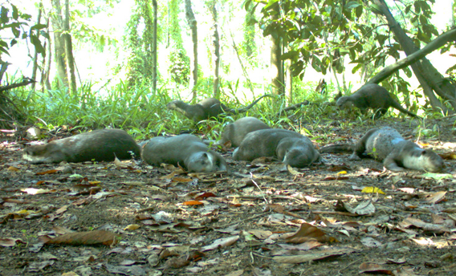

Research
Mammals in human-modified landscapes
Much of my work asks how wild mammals cope with living alongside agriculture and development: where they go, what they are exposed to, and whether it affects their health.
01 Movement & space use
Carnivores in fragmented landscapes
The Lower Kinabatangan floodplain in Sabah is a narrow strip of protected forest surrounded by oil palm plantations. Through the Kinabatangan Small Carnivore Project, which I set up and led, we deployed 29 GPS collars on Malay and common palm civets, the first GPS tracking of any viverrid, to describe their home ranges, sleeping sites, interactions and movements between forest and plantation. As an affiliate scientist with Greg Asner's group at Arizona State University, I've combined these tracks with airborne LiDAR and hyperspectral imagery to look at how forest structure and plant diversity shape where civets go.
From 2015 to 2018 I was field co-manager of the Kinabatangan Carnivore Programme, supervising the live-trapping, sampling and satellite collaring of Sunda clouded leopards and helping develop capture and collaring protocols for leopard cats and sun bears. I also contributed data to a global analysis of how mammals recover from capture and tagging, published in Nature Communications in 2024.
- Space-use patterns of Malay civets persisting within a landscape fragmented by oil palm plantations. Landscape Ecology (2021)
- First known satellite collaring of a viverrid species. Ecological Research (2016)
- Mammals show faster recovery from capture and tagging in human-disturbed landscapes. Nature Communications (2024)
- Movement and space use of Sunda clouded leopards in a human-modified Bornean landscape. Animal Biotelemetry (2026)

02 Health & ecotoxicology
Contaminants and physiology in wild carnivores
Alongside the tracking work, I developed a non-lethal method for monitoring metal exposure from carnivore hair, using ICP-MS and laser ablation ICP-MS to measure both cumulative and time-resolved metal levels. Using civets as an indicator species, this let us look at what drives metal levels across the landscape and how they relate to the animals' health.
I also described blood profiles of wild Malay civets living near oil palm, among the first physiological reference values for wild viverrids. I also contributed to work on chemical immobilization protocols for Sunda clouded leopards.
- The price of persistence: drivers and health implications of metal levels in indicator carnivores. Environmental Research (2022)
- Blood profiles of wild Malay civets at the forest interface of oil palm agriculture. Conservation Physiology (2020)
- Chemical immobilization of free-ranging and captive Sunda clouded leopards. Journal of Veterinary Medical Science (2017)

03 Disease & monitoring
Wildlife disease and long-term monitoring
At FWC my work centres on long-term, statewide monitoring. I produce abundance and trend estimates for five state-listed beach-nesting shorebirds and seabirds, using data collected by the Florida Shorebird Alliance's network of agency, NGO and community-science partners, and I've published the historical beach-nesting bird dataset for reuse. I also designed the framework for implementing Florida's bald eagle long-term monitoring plan.
I've also contributed to research that informs state wildlife management. This includes the investigation of bald eagle deaths and nest failures caused by H5N1 highly pathogenic avian influenza (clade 2.3.4.4), and an analysis of 45 years of Florida bald eagle breeding data (1972–2017).
In Borneo, I also worked with collaborators screening wild civets and domestic cats for Toxoplasma gondii antibodies across the fragmented Kinabatangan floodplain. H5N1 is now being detected in a growing number of wild mammal species, and I'm interested in bringing this kind of disease surveillance and long-term monitoring to mammal populations.
- Bald eagle mortality and nest failure due to clade 2.3.4.4 HPAI H5N1. Scientific Reports (2023)
- Breeding bald eagle population and demographic trends in Florida, 1972–2017. Journal of Raptor Research (2023)
- Florida Historical Beach-Nesting Bird Dataset: 2005–2010. FWC data release (2026)
04 Natural history
Natural history of small carnivores
Many of Borneo's small carnivores are poorly studied. Using camera traps and field surveys, I documented the small carnivore community of the Lower Kinabatangan Wildlife Sanctuary, including a new locality for the endangered otter civet. Related projects produced the first activity data for the Sunda stink-badger and holt activity patterns for smooth-coated otters. I also wrote the Malay civet account for the Wildlife Atlas of Sabah.
Otters have been a particular focus. I supervised the first otter survey in Borneo, carried out by a master's student at Universiti Malaysia Sabah, and led a camera-trap and sign-survey project in Danum Valley to search for the Eurasian otter, which has no confirmed recent records from Borneo. I was the IUCN Otter Specialist Group's regional coordinator for Borneo from 2014 to 2017.
- Small carnivores of the Lower Kinabatangan Wildlife Sanctuary, including a new locality for the otter civet. Small Carnivore Conservation (2016)
- The first recorded activity pattern for the Sunda stink-badger using camera traps. Raffles Bulletin of Zoology (2017)
- Holt-based activity patterns of smooth-coated otter. IUCN/SSC Otter Specialist Group Bulletin (2020)

Next
Where my research is going
Each line of my work has a next step. Mesocarnivores in working landscapes: movement, health and pathogen surveillance of opossums, raccoons and other mesocarnivores from forest to suburb, feeding corridor planning. Contaminants and wildlife health: a contaminant observatory on the Kinabatangan River, tracing metals and rodenticides through the food web. Predators and long-term monitoring: the movement and foraging of mammalian predators at coastal bird-nesting colonies, so managers can target predator control.
Toolkit
Methods
- Capture & handlingLive-trapping, chemical immobilization, biological sampling of wild carnivores
- TelemetryGPS, UHF and VHF collars; home range, movement and resource selection analysis in R
- Camera trappingCommunity surveys, activity patterns, individual identification
- GeospatialAirborne LiDAR and hyperspectral data, ArcGIS, QGIS
- EcotoxicologyHair-based metal monitoring, acid digestion, ICP-MS and laser ablation ICP-MS
- Physiology & healthHaematology and blood biochemistry, faecal parasite and diet analysis, disease surveillance
- Monitoring & dataLong-term, multi-partner monitoring databases (SQL, SSMS); abundance and trend estimation; capture-mark-recapture and occupancy models; decision analysis
Collaboration
Partners
- Florida Fish and Wildlife Conservation CommissionFish & Wildlife Research Institute
- Florida Shorebird AllianceStatewide shorebird and seabird monitoring partnership
- National Fish and Wildlife FoundationPopulation trend framework for Florida's beach-nesting birds
- Sabah Wildlife DepartmentDanau Girang Field Centre; Honorary Wildlife Warden, 2016–2018
- Cardiff UniversitySchool of Biosciences
- Arizona State UniversityCenter for Global Discovery and Conservation Science
- Universiti Malaysia SabahGraduate student supervision
- Sime Darby FoundationKinabatangan landscape research
Funding
Grants
More than US$500,000 in competitive funding, including US$468,000 as PI, co-PI or lead investigator.
- Ocean Park Conservation Foundation, Hong KongCo-PI, “Informed Landscape Conservation”, 2017–2021 · US$400,000
- Full Circle FoundationLead field investigator, 2016–2017 · US$39,100
- Ocean Park Conservation Foundation, Hong KongCo-PI, 2016–2017 · US$25,800
- Phoenix Zoo Conservation & Science GrantPI, 2013 · US$3,000
- Houston ZooPh.D. scholarship, 2013–2017 · US$48,300
- Sime Darby FoundationNamed core collaborator, 2012–2017 · US$335,500 award
Service
Service and affiliations
- Journal reviewerGlobal Change Biology, Journal of Mammalogy, Mammal Study, International Journal of Biodiversity and Conservation; FWC internal scientific reviewer
- American Oystercatcher Working GroupMember since 2024
- AwardsExtraordinary Team Award, Fish and Wildlife Research Institute, 2026
- IUCN/SSC Otter Specialist GroupMember since 2013; Borneo Regional Coordinator, 2014–2017
- IUCN/SSC Small Carnivore Specialist GroupMember since 2015
- Conservation planningTechnical advisor, Sunda Clouded Leopard Action Plan for Sabah (2018–2028); contributor, IUCN Global Otter Conservation Strategy (2018)